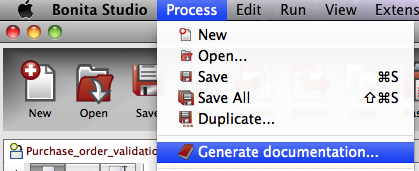

When a process is open in Bonita Studio (Subscription Pack), it is possible to generate documentation containing a summary of individual elements in the process. This is like a process report.
Choose the settings for the format of the export file, how the report will be presented, choose a logo to display and its size in pixels.
The documentation generated will contain:
To create documentation for a process diagram from the Menu bar, click on Process, then click on Generate Documentation.
You can choose to: